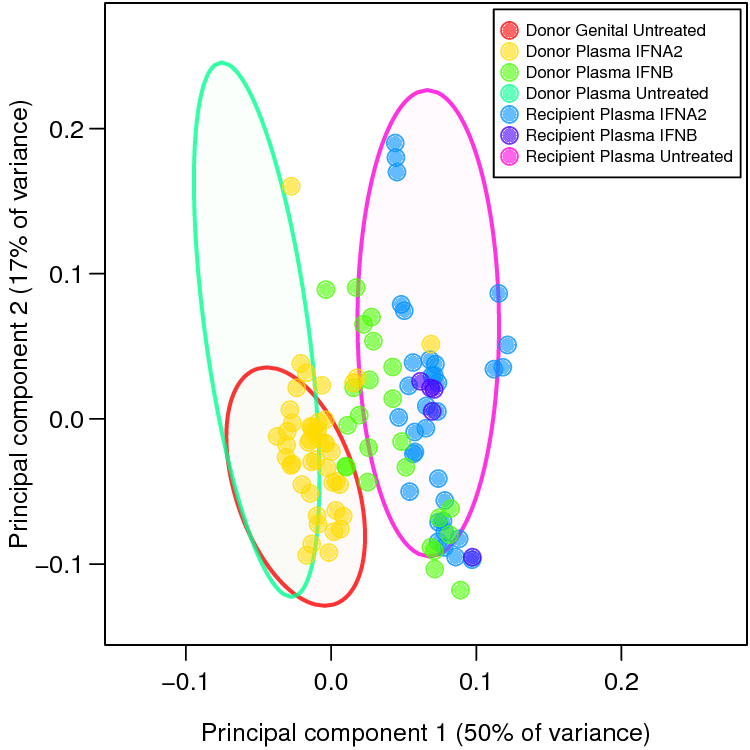
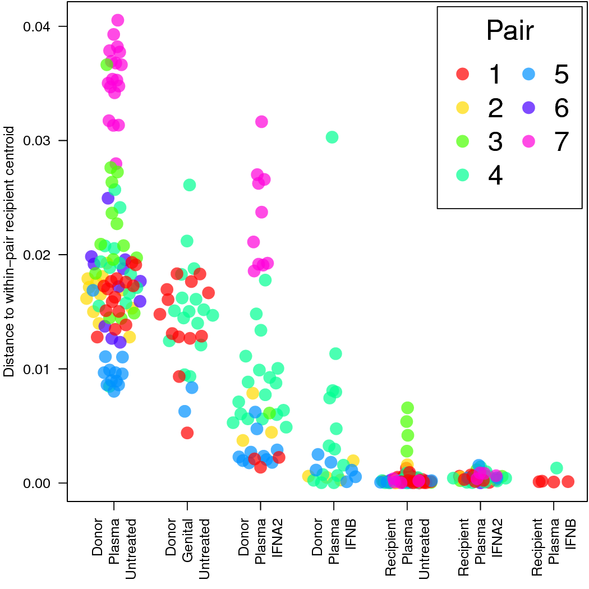
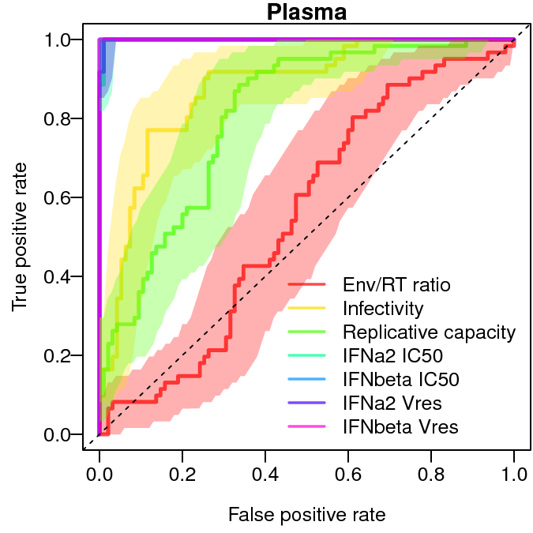

The data used in the paper is in data/Iyer2016_Data.csv. All columns are as described in the paper. The "Censored IFNbeta Vres" is TRUE where the measurement of IFNbeta Vres was lower than the limit of detection and so the unobserved true measurement should be less than or equal the value in the "IFNbeta Vres" column.
The code uses several packages. If you'd like to install them all in one shot, you can do:
install.packages(c('cluster','rstan','vioplot','png','vipor','ROCR','pROC'))The code also uses the parallel package but that is included in base R and should not require installation. Versions used in the paper were:
| Package | Version |
|---|---|
| cluster | 2.0.4 |
| rstan | 2.13.2 |
| vioplot | 0.2 |
| png | 0.1-7 |
| vipor | 0.4.4 |
| ROCR | 1.0-7 |
| pROC | 1.8 |
| R | 3.3.1 |
To generate all plots:
source('runAll.R')This will generate PCA, ROC, box and whisker and Bayesian plots in the out directory. Calculations may take 20-60 minutes. The number of Bayesian simulations have been turned down from that used for the paper for computational simplicity.
The generated plots were tweaked, without altering the underlying data, for clarity and presentation prior to inclusion in the paper.
Plot output should resemble:




Note that stochastic sampling is used to estimate the posterior probabilities so the plots from each run will be slightly different. Also the final figures for the paper were generated using additional iterations to produce smoother estimates.
.png)